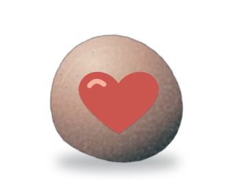

A little surprise.
Spot a painted stone on a park bench, a trail, or somewhere unexpected. Pick it up. It has a story to tell.
A painted stone. A chance encounter. A story that keeps going. Follow little pieces of happiness as they pass from one person to the next.

Made to wander. Meant to connect.REAL CONNECTIONS. ONE STONE AT A TIME.
Small enough for your pocket.
Big enough to make your day.
Meet the wanderers. Pick a stone and see where life has taken it.
A little preview of a big idea. These five stones and their journeys are fictional demo stories.
Five journeys, one shared world. Tap a marker to meet its stone.
Spot a painted stone on a park bench, a trail, or somewhere unexpected. Pick it up. It has a story to tell.
Scan its QR code to open its journey. On your phone, enter the Find Code on the stone and add your little moment.
Enjoy its company, then leave it somewhere safe for the next person. A public place, a little kindness, a new chapter.
You never know how far a little kindness will travel.
Find your favourite stone